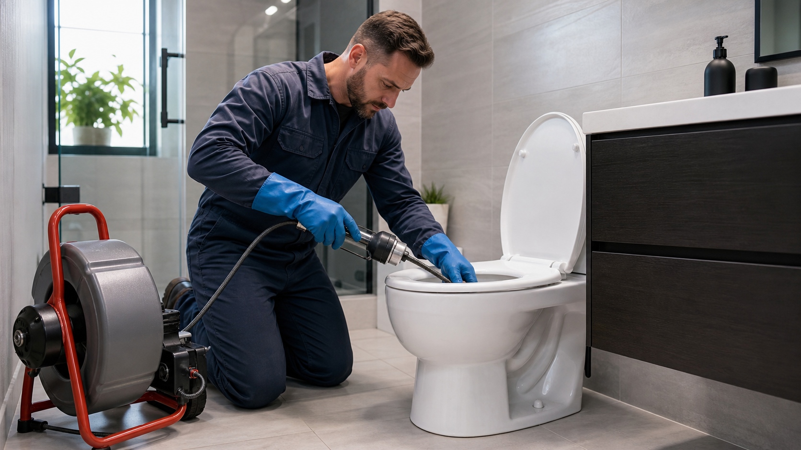
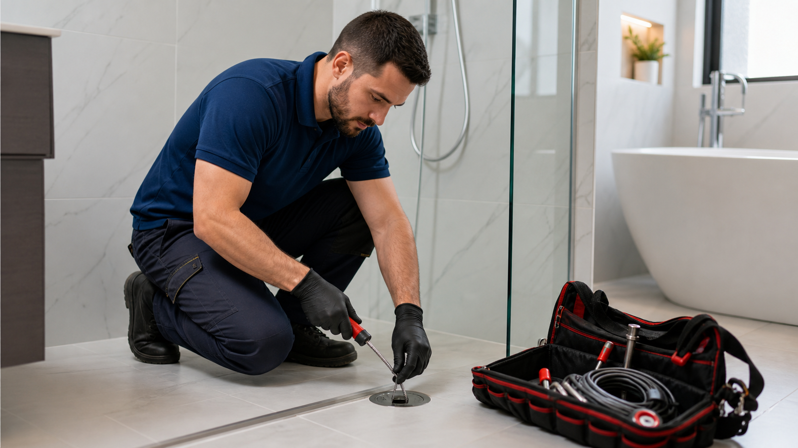
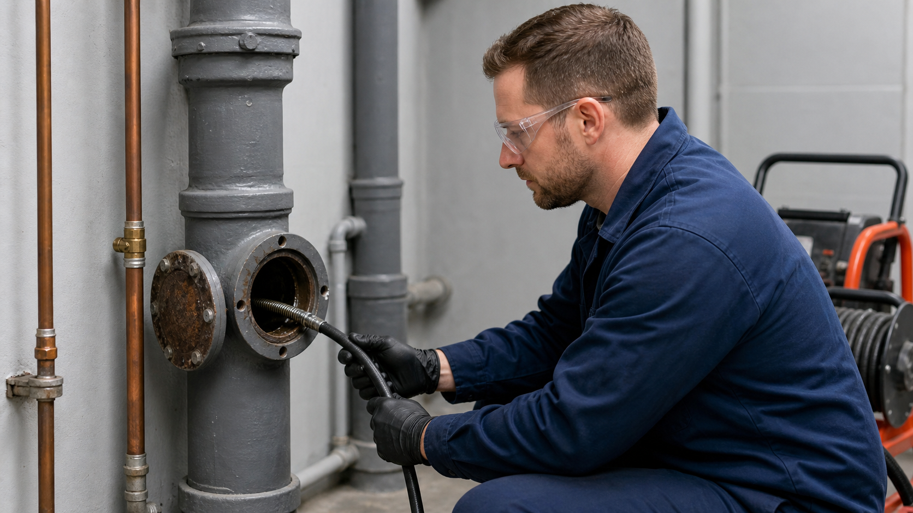
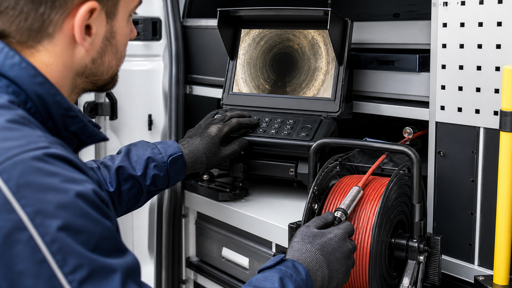
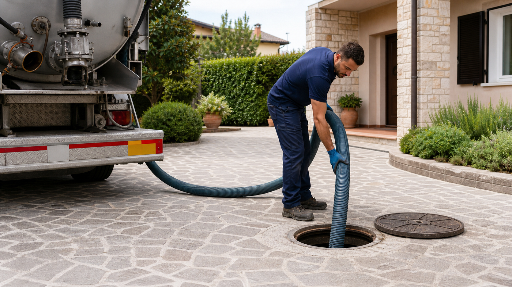
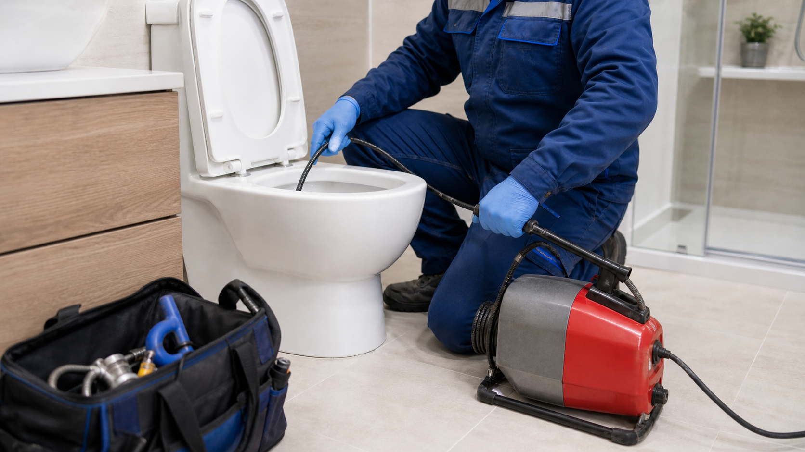
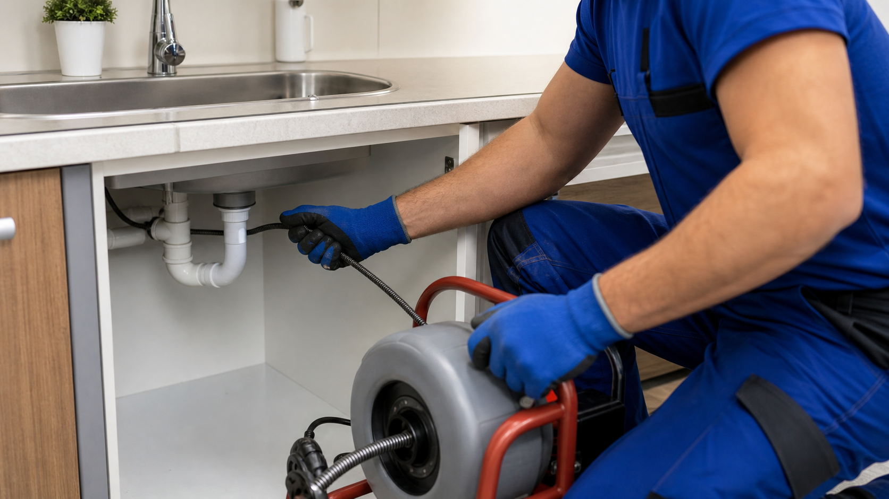
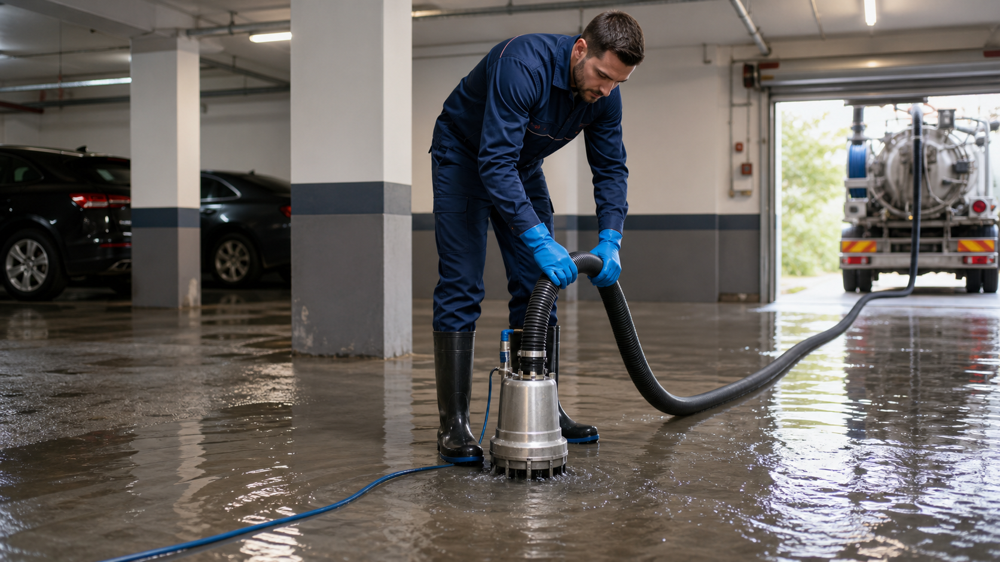
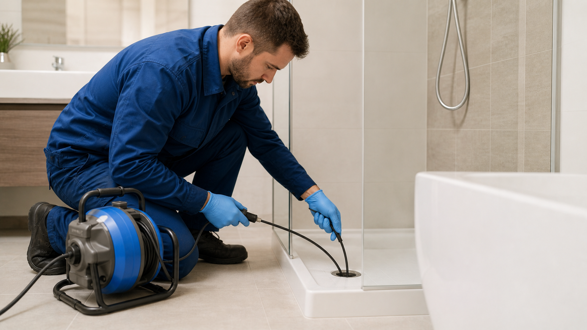
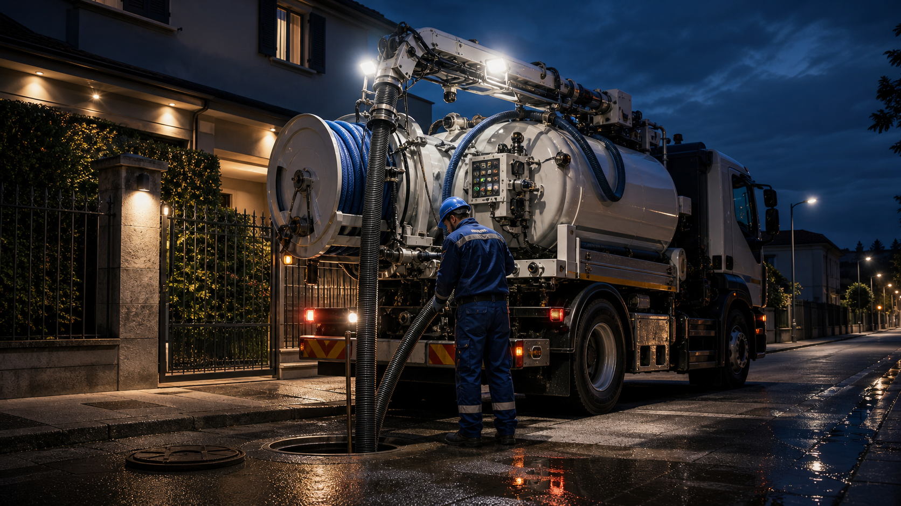

Disotturazione WC a Como
WC bloccato, acqua che risale dal sanitario, odori improvvisi e bagno non utilizzabile.

Disotturazione Lavandini a Como
lavandini lenti, scarichi cucina ostruiti da grassi, sapone, calcare e residui.

Disotturazione Docce e Vasche a Como
acqua che ristagna in doccia, vasche lente, pilette bloccate e cattivi odori.

Disotturazione Colonne di Scarico a Como
più scarichi lenti nello stesso edificio, rumori nella colonna e reflussi dai piani bassi.

Videoispezioni Fognature a Como
blocchi ricorrenti, sospette rotture, radici, cedimenti o punti interni da controllare.

Spurgo Fosse Biologiche a Como
fosse piene, odori persistenti, scarichi lenti e necessità di svuotamento programmato.

Spurgo Pozzi Neri a Como
pozzi neri pieni, odori forti, impianti che ricevono lentamente e reflui da aspirare.
Pulizia Pozzetti Stradali a Como
pozzetti pieni, acqua ferma dopo la pioggia, depositi di terra, sabbia e foglie.

Pulizia Caditoie e Pluviali a Como
caditoie o pluviali ostruiti, ristagni, rigurgiti durante temporali e griglie sporche.

Bonifica Allagamenti a Como
cantine, garage, cortili o locali tecnici con acqua da rimuovere rapidamente.

Manutenzione Fognature a Como
impianti che rallentano spesso, pozzetti da controllare e reti private da mantenere pulite.

Pronto Intervento Spurghi 24H a Como
emergenze improvvise, reflussi, scarichi inutilizzabili e problemi che non possono aspettare.